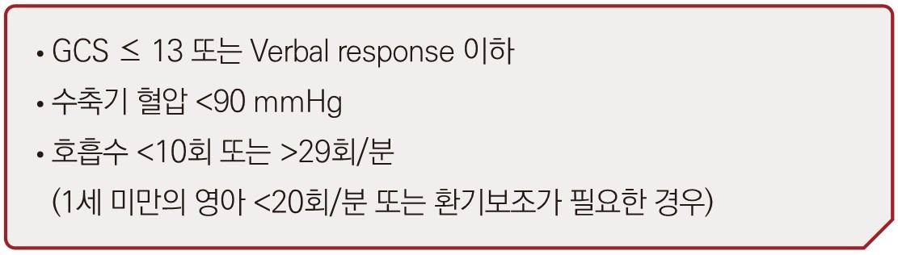
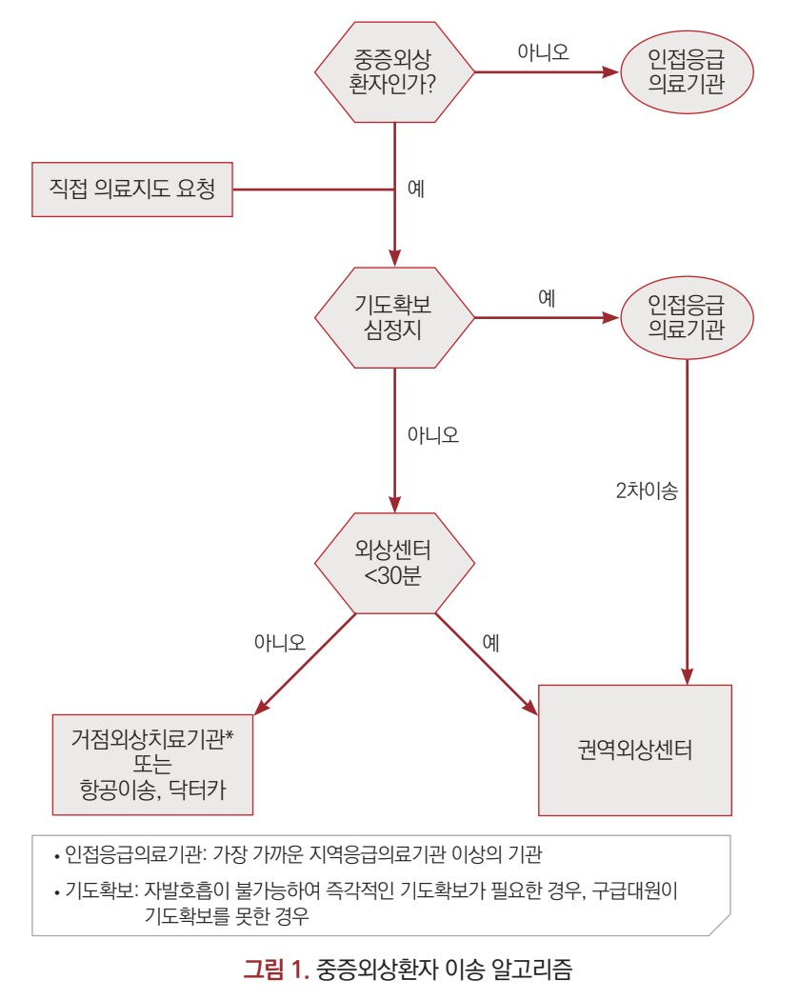
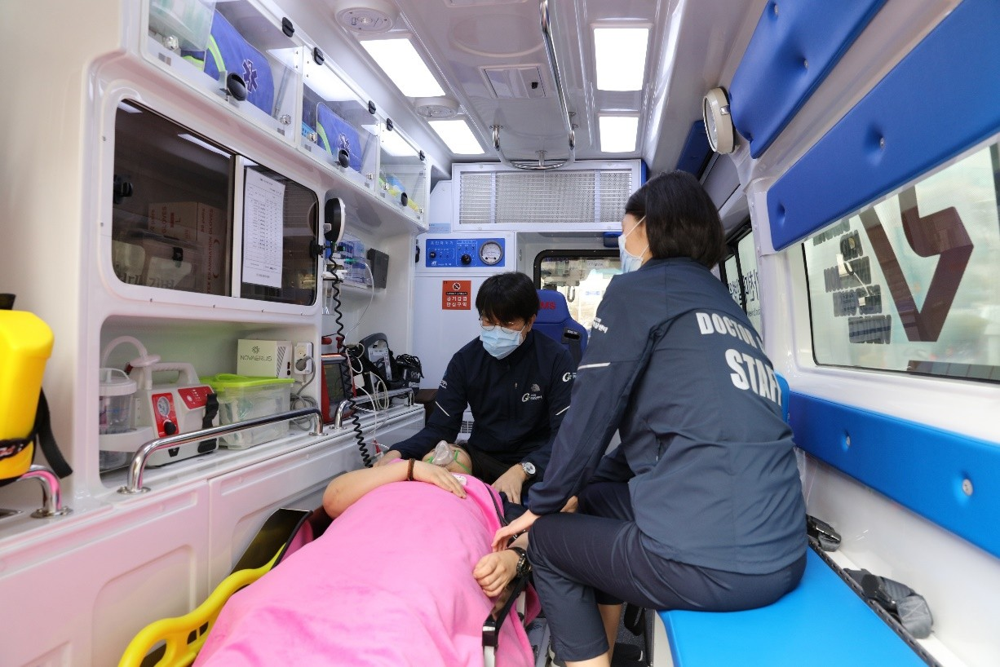
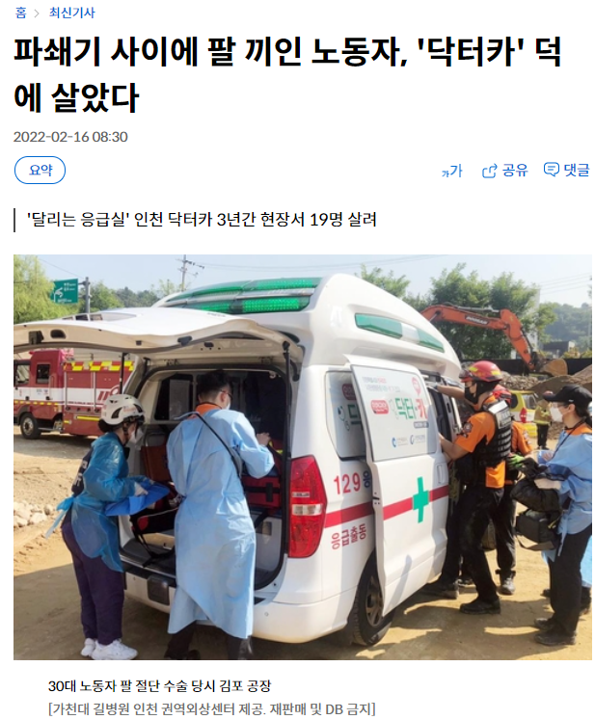

※ 본 지도는 길병원과 가까운 병원들을 소개하기 위한 것이며, 실시간 수용 가능 여부는 반드시 전화로 확인해 주시기 바랍니다.
Map
지도
Criteria
이송기준

외상센터 이송 기준

현장과 최초병원을 잇는 다리
119·지역병원과 함께 만드는 외상 네트워크
About
닥터카 소개
닥터카란?
중증외상 전용- 닥터카란 의사 탑승 구급차(physician-staffed vehicle)입니다.
- 중증외상 환자를 사고현장이나 최초병원으로부터 길병원으로 이송합니다.
- 닥터카는 인천권역 외상센터(길병원) 소속입니다.
- 외상외과 전문의가 직접 탑승합니다.
Who
닥터카 요청 주체
누가 요청할 수 있나요?
대상다음 의료진이라면 누구나 닥터카를 요청할 수 있습니다.
🚒 119 구급대원
🏥 모든 병의원 의사
How
닥터카 요청 방법
1단계: 전화 한 통
24시간 365일▶ 길병원 외상당직폰으로 전화주세요.
(24시간 365일 연중무휴)
※ 닥터카 출동 요청은 119 구급대원 및 의료진만 가능합니다.
일반인의 직접 요청은 불가합니다.
📞 전화 연결 시
· 환자 나이 / 성별
· 사고 시각과 기전 (추락, 교통사고, 압궤 등)
· 현재 상태 (혈압, 호흡, 의식상태)
· 현 위치·병원명
을 간단히 말씀해주시면, 보다 빠르게 판단할 수 있습니다.
· 환자 나이 / 성별
· 사고 시각과 기전 (추락, 교통사고, 압궤 등)
· 현재 상태 (혈압, 호흡, 의식상태)
· 현 위치·병원명
을 간단히 말씀해주시면, 보다 빠르게 판단할 수 있습니다.
When
닥터카 요청 시점
언제 연락해야 하나요?
“지금 바로”- 지금 바로 즉시 연락 주세요.
- 다음 시점 어디서든 가능합니다.
환자접촉 전
환자접촉 후
병원도착 전
병원도착 직후
⏱ 빠르게 연락주실수록 환자의 골든아워를 지킬 수 있습니다.
📌 CT를 찍기 전에 먼저 연락 주시면, 닥터카·수술·혈액 등 전체 전략을 함께 계획할 수 있습니다.
📌 CT를 찍기 전에 먼저 연락 주시면, 닥터카·수술·혈액 등 전체 전략을 함께 계획할 수 있습니다.
Decision
닥터카 출동 결정
누가 출동을 결정하나요?
전문의 판단닥터카의 출동 여부는 길병원 외상외과 전문의가 환자 상태와 거리, 이송 상황 등을 종합적으로 고려하여 판단합니다.
※ “닥터카가 꼭 필요할지” 고민되셔도 부담 없이 연락 주세요. 상담 후 출동 여부를 함께 결정합니다.
현장에서 수술실까지
닥터카 팀이 함께합니다.
Scope
닥터카가 할 수 있는 것
닥터카에는 외상외과 전문의가 탑승하여, 현장·최초병원·이송 중 어느 상황에서도 다음과 같은 시술과 처치를 시행할 수 있습니다.
A·B·C, X, 시술, 수술
현장·최초병원·닥터카 내중증외상 초기 소생부터 응급수술 전 단계까지, 닥터카에서 직접 개입 가능합니다.
🫁 A, B, C
- 초음파 유도 라인 확보
- O형 적혈구 수혈
- 진정치료
- 기관삽관
🩸 X (사지 손상·출혈 조절)
- 사지 혈관 클램핑 및 결찰
- 압박지혈
- 토니켓(tourniquet) 적용
🛠 시술 (Procedures)
- 흉관 삽관 (Tube thoracostomy)
- Large-bore central line insertion
- 대동맥 혈관내 풍선소생술
(Resuscitative Endovascular Balloon Occlusion of Aorta)
⚕️ 수술 (Surgical interventions)
- 윤상갑상막 절제술
- 전복막 패킹
- 소생개흉술
- 응급 사지 절단술
🧰 Preparation (길병원 내 사전 준비)
- 수술방 준비
- 대량급속수혈 시스템 준비
- 혈관조영술(Angiography) 준비
- 혈관색전술(Embolization) 준비
* 위 시술과 수술은 상황에 따라 현장, 최초병원, 닥터카 내에서 시행될 수 있습니다.
닥터카 기타
닥터카; 기타

닥터카의 내·외부 모습입니다.

닥터카가 현장으로 출동하여 구조물에 끼어서 구출할 수 없는 환자를 진료하였습니다.
구출에 시간이 오래 소요될 것으로 판단되는 경우 닥터카가 출동할 수 있습니다.

강화, 김포, 부천, 광명, 시흥 등지에서 환자 발생 시 구급대원님이 닥터카를 요청하면,
중간 위치의 병원이나 안전한 장소에서 만나 환자를 닥터카로 인계할 수 있습니다.

응급실 선생님들께서도 환자 접촉 시 지체 없이 연락주시길 부탁드립니다.
Full work-up이 되지 않은 상태라도 전화주셔도 괜찮습니다.
맺으며…
병원 전 단계의 환자 이송 문제는 개인이 해결할 수 없습니다.
길병원 외상센터도, 지역·권역 응급센터도 혼자서는 해결할 수 없습니다.
모두의 관심과 거버넌스, 시스템 확립과 긴밀한 소통이 필요합니다.
함께 힘써주신다면 반드시 더 나은 결과로 보답하겠습니다.
보다 안전하고 체계적인 외상환자 이송을 위해
길병원 외상센터 닥터카가 앞장서겠습니다.
감사합니다.
Survey
닥터카 웹 사용 경험 설문
1분 정도 소요됩니다. 응답은 통계·연구 목적으로만 사용되며, 개별 응답자는 식별되지 않습니다.